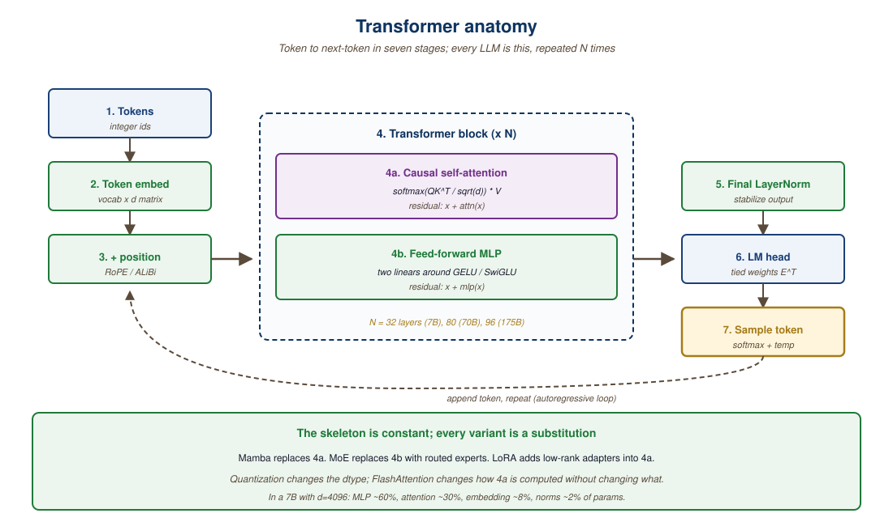

Rather than describe the book, this page shows three pieces of it. A sample callout from the agent chapter, a sample from-scratch implementation paired with its library equivalent, and a sample diagram of how concepts in one part connect to another. Each is taken verbatim from the relevant chapter.
Sample One: A Callout
Every chapter uses a small set of callouts to mark what kind of content you are reading. The most consequential one is the Key Insight, which marks the load-bearing idea of a section. Here is one from Chapter 26 on agent foundations.
The popular framing of "agents as a new architectural paradigm" obscures what is actually happening. An agent is the same transformer you used in Chapter 4, generating tokens the same way it did in Chapter 5, with two differences. First, certain tokens (tool calls) trigger side effects in an external environment. Second, the result of those side effects re-enters the context window before the next decoding step. Everything else (planning, reflection, multi-agent supervision) is a special case of which tokens trigger which side effects and when generation stops. This is why mastery of Chapter 5 on decoding turns out to be the foundation for the entire agent stack.
A Big Picture opens each chapter and frames where it sits in the book. A Warning flags a production pitfall that has cost real money or real time. A Library Shortcut shows the one-liner equivalent of a from-scratch implementation. A Research Frontier closes each chapter with open questions and 2024-2026 papers. The full callout catalogue is in FM.5 How to Use This Book.
Sample Two: Code with a Library Shortcut
Most chapters teach a concept twice. Once from scratch, so you understand the moving parts. Once via the library call, so you can ship. Here is the pattern, abridged from Chapter 19 on PEFT: the same LoRA adapter, first as the math the paper describes, then as the four lines you would write in production.
# From scratch: a LoRA adapter is two low-rank matrices added to a frozen layer
import torch.nn as nn
class LoRALinear(nn.Module):
def __init__(self, base_layer: nn.Linear, rank: int = 8, alpha: float = 16.0):
super().__init__()
self.base = base_layer
for p in self.base.parameters():
p.requires_grad = False # freeze the original weights
in_dim, out_dim = base_layer.in_features, base_layer.out_features
self.A = nn.Parameter(torch.zeros(rank, in_dim))
self.B = nn.Parameter(torch.zeros(out_dim, rank))
nn.init.kaiming_uniform_(self.A) # B stays at zero so training starts at the base output
self.scale = alpha / rank
def forward(self, x):
return self.base(x) + self.scale * (x @ self.A.T @ self.B.T)
from peft import LoraConfig, get_peft_model
config = LoraConfig(r=8, lora_alpha=16, target_modules=["q_proj", "v_proj"])
model = get_peft_model(base_model, config)
model.print_trainable_parameters() # ~0.1% of total parameters
The from-scratch version is fifteen lines of PyTorch. The library shortcut is four lines of peft. The book teaches both, in that order, so that when the library version misbehaves in production you know where to look.
Sample Three: A Diagram
Most chapters carry at least one diagram that sits between text and math. Here is the diagram from Chapter 4 (The Transformer Architecture) that anatomizes a single transformer block: the substrate that every model in this book inherits, from a 1B on-device assistant to a frontier mixture-of-experts.

Every chapter ends with three things you can use directly: a hands-on lab (30-90 minutes, runnable code, realistic data), an annotated bibliography of the 2024-2026 papers behind the chapter, and a Research Frontier callout that names what is still open. Every part ends with a Tools of the Trade chapter that catalogues the working platforms, libraries, datasets, and models for that part as of mid-2026.
What Comes Next
Next: the full table of contents, broken down by part. Proceed to FM.3 What This Book Covers.